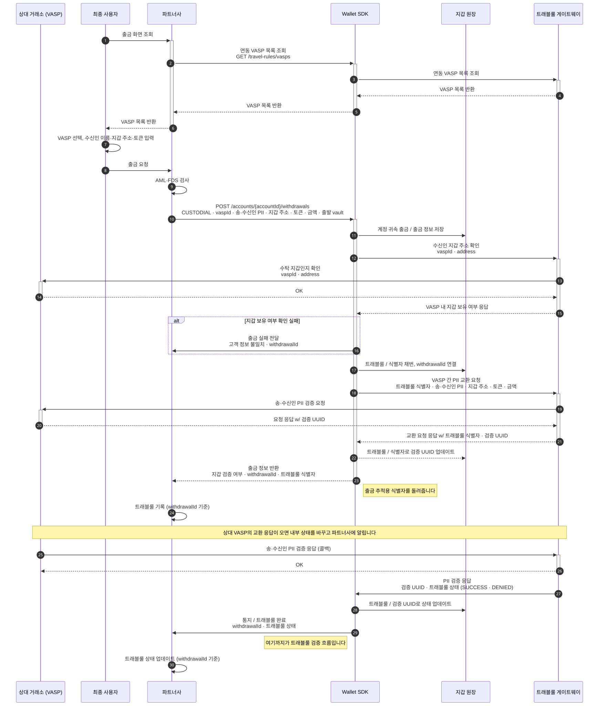
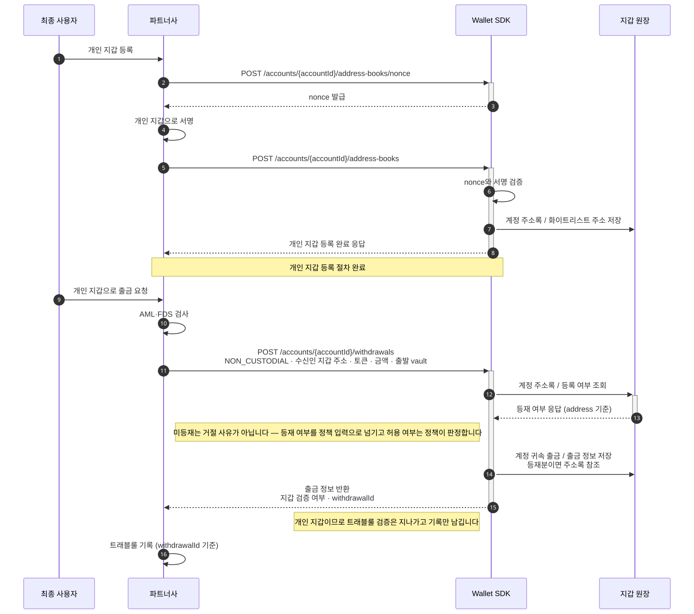
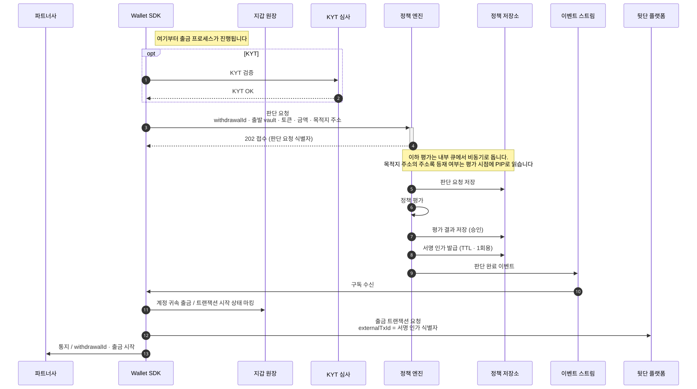
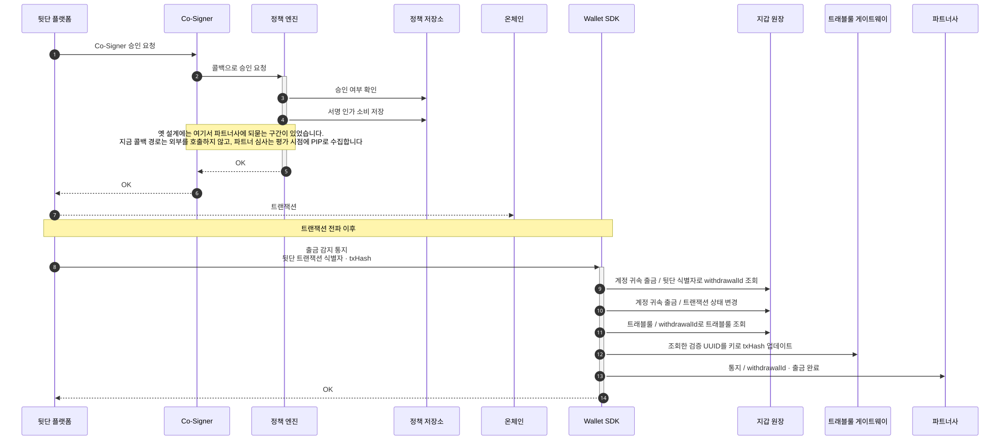

출금 (Withdrawal)
출금은 워크스페이스 vault에서 외부로 자금이 나가는 이동이고, 계정 지갑에서 직접 나가는 오입금 반환도 여기 들어갑니다. 목적지가 무엇이냐에 따라 앞 구간이 달라지고, 달라진 둘이 만난 뒤는 한 절차입니다. 아래 세 다이어그램이 그 순서입니다.
VASP 출금은 상대 거래소와 정보를 두 번 주고받습니다
이 흐름은 계약에만 있습니다. 지금 CUSTODIAL 목적지를 지정하면 첫 검증에서 400
ACCOUNT_WITHDRAWAL_CUSTODIAL_UNSUPPORTED 가 돌아옵니다.
다이어그램의 배역은 여섯입니다.
- 상대 거래소 (VASP): 자산을 받는 상대편 가상자산사업자입니다
- 최종 사용자: 파트너사 서비스를 쓰는 사람입니다
- 파트너사: Wallet SDK를 도입한 회사, 곧 Workspace 하나입니다
- Wallet SDK: 파트너 대상 API를 받아 정책 엔진에 판단을 묻고 서명 인프라에 제출하는 서버 컴포넌트입니다
- 지갑 원장: 출금·트래블룰·주소록 기록을 담는 Wallet SDK 쪽 저장소입니다
- 트래블룰 게이트웨이: 송·수신 정보를 사업자끼리 교환하는 트래블룰 경로를 중개합니다

개인 지갑 출금은 주소록 등재가 선행됩니다

두 경로가 합쳐진 뒤는 한 절차입니다
앞 다이어그램에 없던 배역은 다섯입니다.
- KYT 심사: KYT 검증을 수행하고 결과를 돌려주는 외부 심사입니다
- 정책 엔진: 자금을 움직이는 요청이 서명 인프라로 가기 전에 그 요청을 심사하는 별도 시스템입니다
- 정책 저장소: 판단 요청과 평가 결과, 서명 인가를 담는 정책 엔진 쪽 저장소입니다
- 이벤트 스트림: 판단 완료 이벤트를 구독자에게 나르는 경로입니다
- 뒷단 플랫폼: 지갑과 키를 보관하고 트랜잭션을 제출하는 외부 플랫폼입니다

이어지는 다이어그램에 새로 나오는 배역은 둘입니다.
- Co-Signer: 서명 인프라 쪽에서 서명 직전에 정책 엔진 콜백으로 승인을 묻는 구성 요소입니다
- 온체인: 블록체인 네트워크입니다

서명 인가는 승인된 판단 요청이 발급하는 한 번만 쓸 수 있는 서명 근거입니다. 옛 설계는 판단 요청에 그 인가를 동기로 돌려줬습니다. 지금은 202로 접수만 하고 결과를 이벤트로 냅니다. 그 2단계 규율은 서명 게이트에서 정합니다.
예약은 지갑에서 나가는 송금 셋에 함께 적용됩니다
계정 귀속 출금·자기 귀속 출금·vault 이체가 같은 가용 잔액을 예약해서 나갑니다. 가용 잔액은 온체인 잔액에서 동결분과 진행 중 출금 예약분을 뺀 값입니다. 하나만 빼면 vault 이체로 옮긴 뒤 출금하는 우회 경로가 생깁니다.
온체인 충분성은 요청 시점에 보지 않습니다. 예약은 Wallet SDK 원장 기준이라, 예약을 통과한 요청도 제출 단계에서 잔액 부족으로 실패합니다.
예약이 어떤 단계에서 잡히고 언제 풀리는지는 자금 동결에서 정합니다.
출금 종류를 나누는 기준은 자금 귀속입니다
자금 귀속은 그 자금이 Account 것인지 Workspace 것인지입니다.
| 종류 | 자금 귀속 | 목적지 | 요청 주체 |
|---|---|---|---|
| 계정 귀속 출금 | 최종 사용자 | VASP · 개인 지갑 | 사용자 · 시스템 |
| 자기 귀속 출금 | 회사 | 회사 외부 지갑 (등재분 한정) | 운영자 |
| 계정 지갑 출금 | 최종 사용자 | 지정한 입금 건의 발신처 | 운영자 (오입금 반환) |
스코프 축은 어떤 데이터가 어느 스코프 키로 격리되는지의 분류입니다. 계정 귀속 출금은 tenant 축이고 자기 귀속 출금은 workspace 축이라, 같은 테이블에 담으면 어느 스코프로 조회해야 하는지가 행마다 달라집니다.
계정 지갑 출금은 오입금 반환 하나입니다
계정 지갑 출금(aww-)은 계정 지갑에서 직접 밖으로 나가는 유일한 경로입니다. 앞의 둘과
달리 워크스페이스 vault를 거치지 않습니다.
- 목적지: 임의 주소가 아니라 지정한 입금 건의 발신처입니다. 잘못 들어온 자금을 온 곳으로 돌려보내는 것이 알려진 용도의 전부입니다. 발신처가 기록되지 않은 입금 건은 지정할 수 없습니다. 목적지 근거가 없기 때문입니다. 발신처 밖까지 허용할지는 아직 정하지 않았습니다.
- 요청 주체: 운영자뿐입니다. 파트너사 API에는 이 경로가 없습니다.
- 인가: 어드민 액션이 승인자의 확인을 거쳐야 실행되는 통제인 승인 게이팅이 서명 인가에 더해집니다. 승인에 필요한 최소 인원인 정족수가 필요하고 요청자와 승인자가 같을 수 없습니다. 일곱 이동 중 승인이 붙는 출금은 이것뿐입니다.
계정 지갑 자산을 워크스페이스 vault로 모으는 이동인 집금과 같은 자원을
씁니다. 입금 건을 지정하고 그 건의 해제를 겸합니다. 그래서 반환된 건은 RELEASED를 거치지 않고
WITHDRAWN으로 직행합니다.
전용 시퀀스는 이 문서군에 없습니다. 트래블룰 교환이 없는 점 외에는 위 “두 경로가 합쳐진 뒤”의 서명·제출 구간을 그대로 거칩니다.
목적지에 따라 확인 근거가 다릅니다
개인 지갑은 최종 사용자의 소유 증명이 필요합니다. 소유 증명은 개인 지갑을 주소록에 올리기 전에 최종 사용자가 그 키로 서명해 보이는 절차입니다. nonce에 서명해 그 주소를 자기 것으로 증명하고 그 결과가 주소록에 등재됩니다.
VASP 지갑은 소유 증명을 요구하지 않습니다. 트래블룰이 그 역할을 대신하므로 제3자 송금이 가능합니다. 파트너사 사용자가 상대 거래소의 다른 사람에게 보낼 수 있습니다. 다만 이때는 최소한 실명 정보가 트래블룰 정보에 들어갑니다.
화이트리스트는 거절 사유가 아닙니다
미등재가 곧 거부는 아닙니다. 등재 여부가 정책 입력으로 들어가고 정책이 그것을 보고 판단합니다.
등재·회수와 그 반영 시점은 주소록에 있습니다.
계정이 비활성이면 출금이 막힙니다. 응답은 전용 에러 코드가 아니라 404입니다. 자세한 이유는 계정 계층에 있습니다.
다음으로
출금은 시작·완료·실패를 각각 통지합니다 —
WITHDRAWAL_INITIATED·WITHDRAWAL_FINALIZED·WITHDRAWAL_FAILED. 통지 본문과 중복 제거 규칙은
웹훅에 있습니다.
출금이 예약하는 가용 잔액과 그 예약이 언제 풀리는지는 자금 동결에 있습니다.